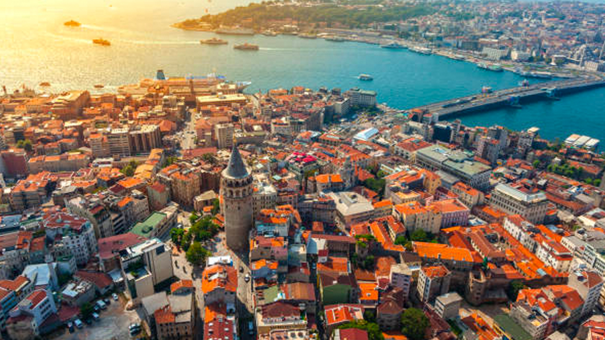

Tarihi Yarımada
İstanbul'un en önemli kültürel miras alanı, UNESCO Dünya Mirası listesinde yer alan Tarihi Yarımada'dır. Bu bölge, Bizans ve Osmanlı dönemlerine ait pek çok tarihi eseri barındırır.
Tarihi Yarımada; Ayasofya, Topkapı Sarayı, Sultanahmet Camii, Yerebatan Sarnıcı gibi dünyaca ünlü eserlere ev sahipliği yapar.